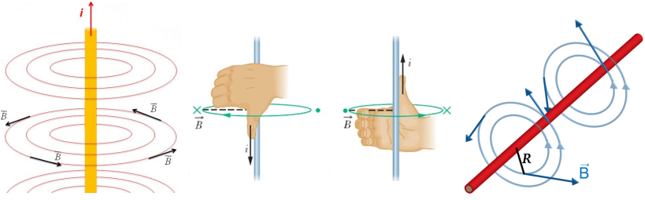
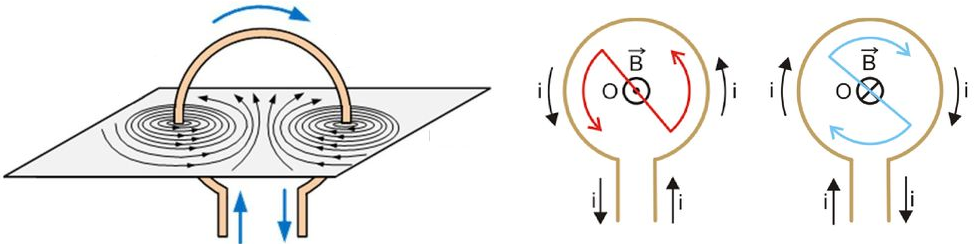
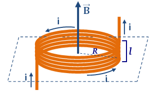
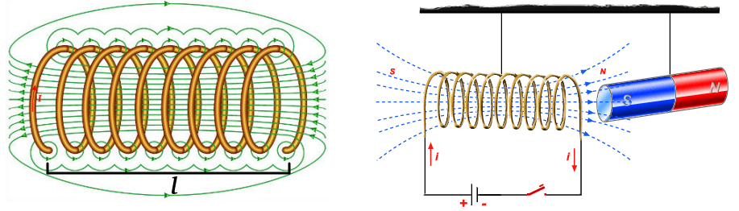

Aula11-86: Campo magnético em fio retilíneo longo e bobinas
Campo magnético em um fio retilíneo longo
Conforme revelou o experimento de Ørsted, o movimento de cargas elétricas gera campo magnético. Se fizermos uma corrente elétrica passar por um condutor, as cargas elétricas que se movimentam no interior do fio farão surgir um campo magnético cujas linhas de força se estendem ao redor do fio, formando um padrão de círculos concêntricos.
Para identificarmos a orientação das linhas de força, podemos nos servir da regra da mão direita. Essa regra é um artifício que nos ajuda a encontrar a orientação das linhas de força: basta “segurar” o fio com o dedão orientado no mesmo sentido da corrente convencional; ao fazermos isso, os demais dedos da mão estarão automaticamente orientados no sentido das linhas de força.

A intensidade do campo magnético gerado pelo condutor no vácuo é dada através da seguinte expressão:
Em que:
◦ é a permeabilidade magnética do meio;
◦ é a corrente elétrica que atravessa o condutor;
◦ é a distância entre o ponto analisado e o condutor.
Campo magnético no interior de uma espira circular
Ao curvarmos um condutor, fazendo-o formar um padrão circular, estaremos criando uma espira. Ao fazermos uma corrente elétrica percorrê-la, notaremos a formação de campos magnéticos conforme a ilustração abaixo.

O valor do campo no centro de uma espira pode ser obtido por meio da fórmula:
Em que:
◦ é a permeabilidade magnética do meio;
◦ é a corrente elétrica que atravessa o condutor;
◦ é a distância entre o ponto analisado e o condutor.
Campo magnético no interior de uma bobina achatada
Uma bobina achatada é, basicamente, uma espira de vários ciclos. Para que uma espira de mais de uma volta seja considerada uma bobina achatada, é preciso que os ciclos estejam próximos uns dos outros (não podem estar em hélice) e que o raio R da bobina seja consideravelmente maior que a largura l da bobina.

O campo magnético no centro de uma bobina achatada é dado pela fórmula:
Em que:
◦ é a permeabilidade magnética do meio;
◦ é a corrente elétrica que atravessa o condutor;
◦ é a distância entre o ponto analisado e o condutor.
Campo magnético no interior de um solenoide
Um solenoide é uma espira de vários ciclos que forma uma bobina de largura l consideravelmente maior que o raio das espiras. Observe que os campos magnéticos gerados por cada um dos ciclos da espiral se combinam, formando um campo magnético que se assemelha muito ao de um ímã. Na realidade, um solenoide percorrido por corrente elétrica se comporta como um ímã e, por essa razão, é às vezes chamado de eletroímã (o mesmo acontece com os demais arranjos de espiras estudados anteriormente).

O campo magnético no centro de um solenoide é dado pela fórmula:
Em que:
◦ é o número de voltas da espira;
◦ é a permeabilidade magnética do meio;
◦ é a corrente elétrica que atravessa o condutor;
◦ é a distância entre o ponto analisado e o condutor.
Obs.: é possível e muito comum introduzir no interior do solenoide um cilindro de composição metálica. Ao fazermos isso, altera-se a permeabilidade μ, potencializando assim o campo magnético do solenoide.